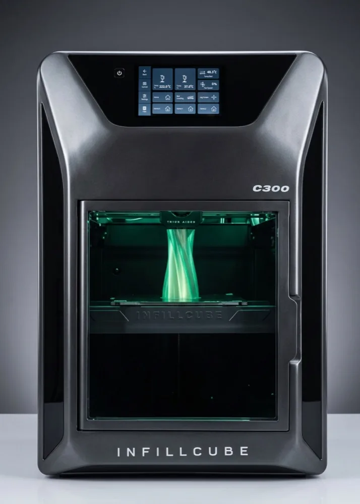
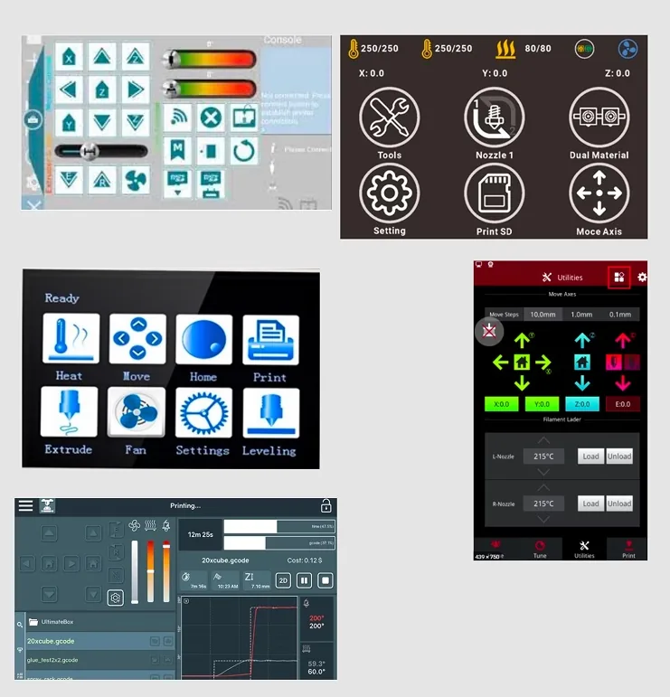
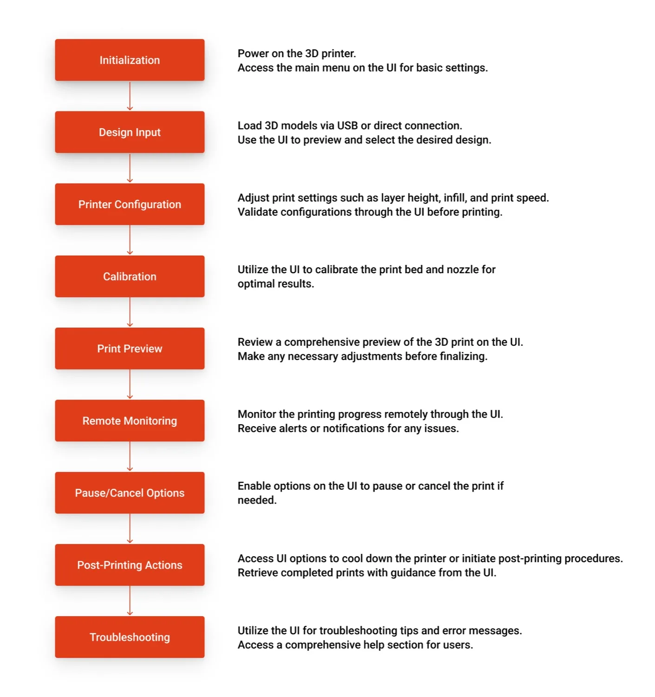
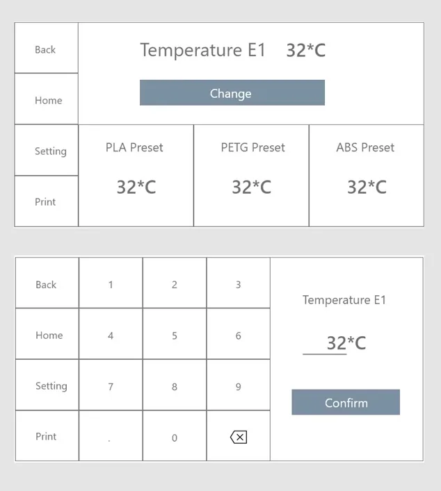
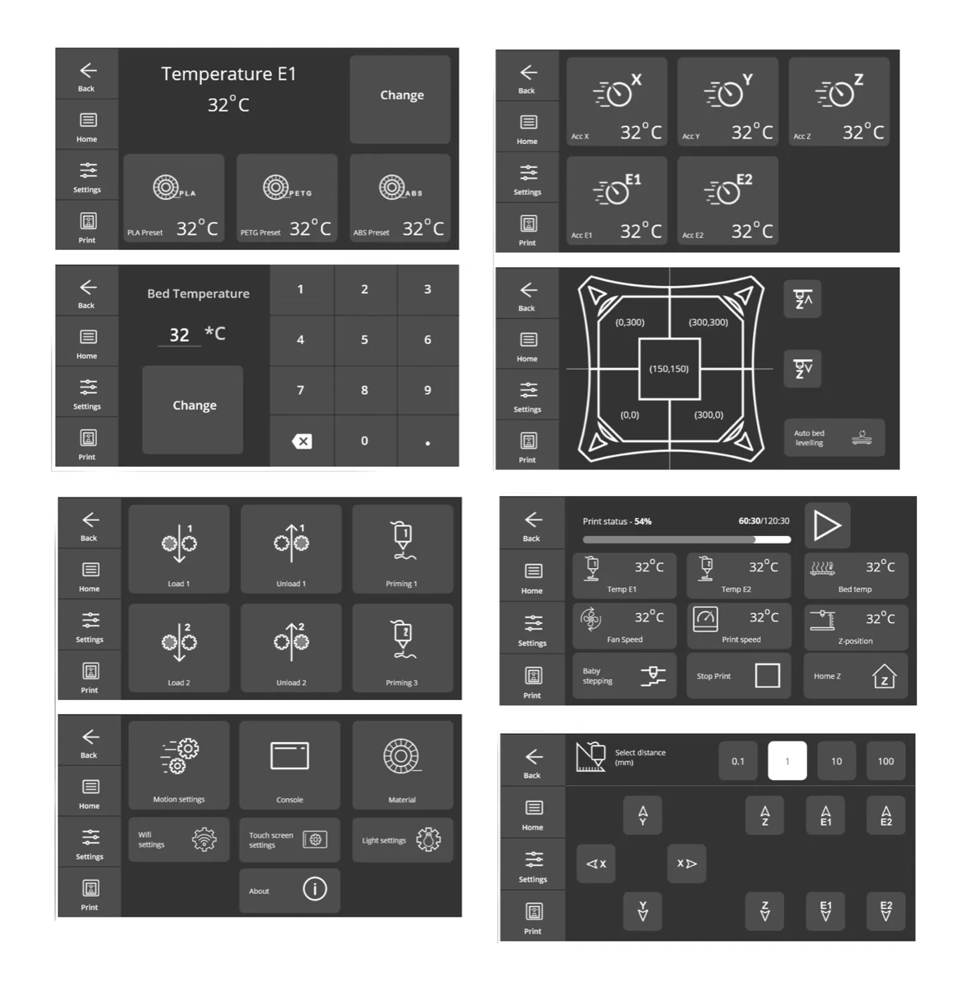
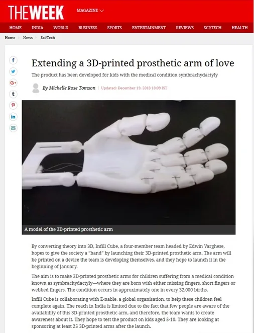

Infillcube — UI for an Industrial 3D Printer
Design Lead · 2018
Industrial 3D printers are built for output, not for people — locked behind technical jargon, sparse interfaces and dense manuals. For Infillcube's C300, I led the design of an on-device touchscreen that a complete beginner could operate, all within a 256 KB memory budget and a greyscale screen.

Project overview
Industrial printers lean on technical expertise. They ship with cluttered interfaces, little to no remote support, and a learning curve steep enough that owners stay dependent on the manufacturer long after purchase.
The brief was to break that pattern: an interface a non-technical operator could pick up, without giving up the control technical users expect. I structured the project around the Double Diamond — Discover, Define, Develop, Deliver.
The electronics set the rules before a single screen was drawn. The Duet 2.0 board gave us a resistive touch panel, a basic stock UI, and just 256 KB of flash memory. Every decision had to earn its storage:
- Reusable components, minimal elements — to fit the entire interface inside the memory budget.
- Greyscale only — matching the product's look and keeping every asset light.
- Large touch targets — operable from up to two feet away, often with gloves on.
- Fixed 800×400px screens, aligned to the panel's placement on the machine.
Experienced 3D-printer users were scarce, so Infillcube set up interviews with interested clients. Three findings shaped everything that followed:
- A steep learning curve — new owners lean heavily on the manufacturer well past purchase.
- Support is everything — secondary trainers and responsive help make or break the first weeks.
- The UI is an afterthought — the whole category obsesses over print output and ignores the operator.
A competitive teardown of industrial-grade printers confirmed it: UX is routinely sacrificed for technical capability, remote support is rare, and dense documentation does the heavy lifting the interface should.

Research narrowed the scope to three things the interface had to do well:
- Support integration — remote diagnostics plus alerts for printer status and issues, so help arrives before a print fails.
- Visual feedback — a live progress bar, clear error visualisation, and a print-simulation preview before committing.
- An intuitive interface — logically streamlined menus and recognisable icons over text.
Before designing screens, I mapped the full end-to-end print job — from powering on to retrieving the finished part — then ran a brainstorm with engineering to pin the pain point and opportunity at every step. Those opportunities went through a four-way priority matrix (Must-have / Can be done / Nice to have / Won't), which defined a tight, focused MVP.

Low-fidelity screens let me break the complex workflow into manageable steps and test print-job scenarios quickly — adjusting layout and flow long before a pixel was polished.

The final screens carry the whole experience: a consistent left navigation rail, big legible readouts visible from across a workshop, guided calibration, and remote monitoring that even non-technical users found easy. Two rounds of usability testing — once on the designs, once integrated into the printer — caught a confusing material-reset flow and an unclear "unreadable file" error, both fixed before launch.

The impact
Beyond the numbers, the C300 powered something bigger. Through “Hands of Hope”, Infillcube partnered with e-NABLE to 3D-print custom prosthetic arms for children with symbrachydactyly — sponsoring one child for every printer sold. An interface that made the machine easier to run helped put it in more hands, and those hands made more arms.
